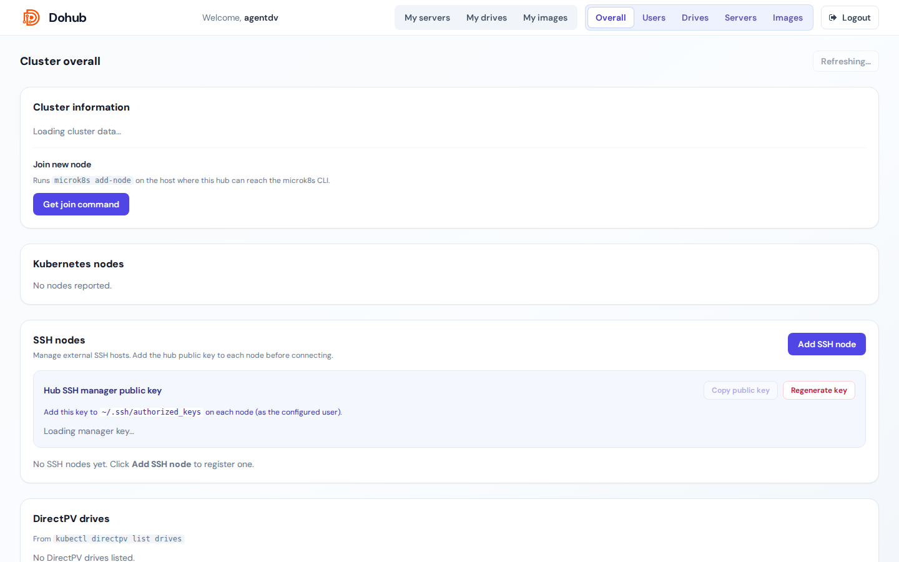

Tab Overall (admin) hiển thị thông tin cluster và công cụ vận hành.

microk8s add-node, Copy lệnh join.Bảng: Name, Status, Roles, Internal/External IP, Version, OS, CPU, Memory.
Quản lý máy SSH ngoài cluster (health check, terminal admin):
authorized_keys remote.Bảng output kubectl directpv list drives — xem trước khi discover/init chi tiết tại DirectPV discover & init.